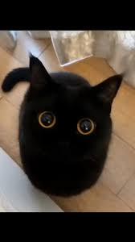

Обязанности по дому каждого кота
Важное введение для кожаных мешков
Каждому владельцу пушистого повелителя необходимо знать, что
кошачий труд — это основа домашнего уюта. Ниже представлен
строгий регламент, которому следует ваш питомец ежедневно.
-
Кот должен отсыпаться за человека, всех его родственников, друзей и
соседей вместе взятых.
- Кот должен защищать человека от комнатных растений.
-
Кот постоянно должен поддерживать человека в форме, заставляя его
непрестанно двигаться по квартире, нагибаться, собирая ручки,
карандаши, носки и т. д.
-
Кот должен крепко держать зубами ручку или карандаш,
пока человек пытается писать.
-
Кот постоянно должен проводить ревизию в холодильнике, даже если
человек этого не хочет. Если он не хочет, значит, что-то там прячет, и
с этим что-то следует хорошенько разобраться, а потом уж призвать к
ответу самого человека.
-
Кот должен ночью каждый час проверять, не заползла ли под одеяло
человеку какая-нибудь змея.
-
Кот время от времени должен тренировать себя на случай непредвиденного
циркового выступления. Для этого он должен периодически устраивать
полеты под куполом дома, прыжки с гардины на люстру и обратно и другие
всевозможные запрыгивания.
-
Кот должен помогать человеку стелить постель, внимательно наблюдая,
чтобы под простыней не оказалось никаких предметов.
-
Кот должен помнить, что
сон для человека – это пустая трата времени, поэтому, завидев
спящего человека, необходимо тут же его разбудить, прыгнув ему на
живот, а еще лучше на голову.
-
Кот должен каждое утро напоминать человеку старую пословицу:
«Кто рано встает, тому Бог дает». И чем раньше встанет
человек, тем больше ему (а заодно и коту) даст Бог.
-
Кот должен делиться с человеком всем, что у него есть. Постоянно
отдавать часть меха на утепление одежды и пола и выкидывать половину
еды из чашки.
-
Кот должен петь песни, чтобы доставлять человеку радость. Даже если
песни грустные.
-
Кот должен проверять, по какой причине кто-то не закрыл шкаф или
тумбочку и не задвинул ящик.
-
Кот должен отгонять от человека плохие сны. Если кот заметит, что
человек ворочается в постели, он непременно должен прыгнуть человеку
на голову и начать отгонять дурные сны и кошмары.
-
Кот должен знать, что лежит во всех коробках и пакетах. И на личном
опыте убедиться, насколько там удобно и хорошо находиться.
-
Кот должен во время сна человека заглушать наружный шум,
громко урча под ухом.
Дополнительные права кота:
- Требовать еду в 4 часа утра.
- Тыгыдык по коридору в полночь.
Наш пушистый контролер:

Узнать больше о поведении котиков можно на
Википедии.